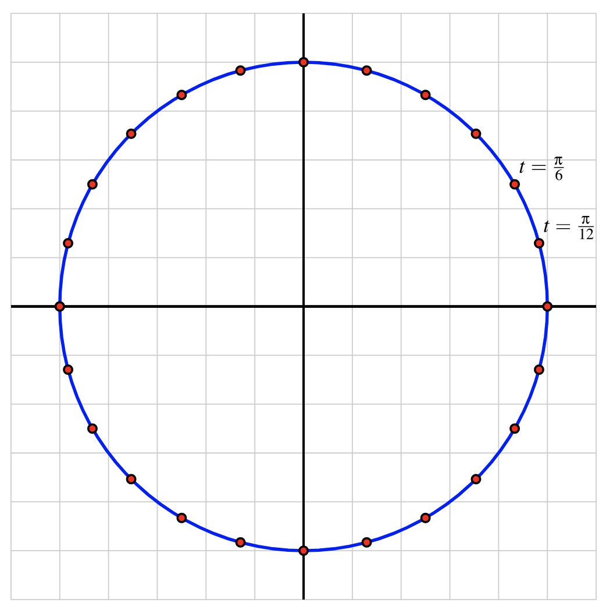

Example2.16.1.Desmos: height of a point on a circle.
Suppose that you are taking a ride on a ferris wheel and we consider your height \(h\) above the ground as a function \(h=f(d)\) of the distance \(d\) that you have traveled around the wheel.
The animation below illustrates the relationship between height and distance traveled around a circle, where the point is allowed to travel more than once around the circle.
The natural phenomenon of a point moving around a circle leads to interesting relationships. It is apparent that each point on the circle corresponds to one and only one height, and thus we can view the height of a point as a function of the distance the point has traversed around the circle, say \(h=f(d)\text{.}\) This is one example of what is known as a circular function. Such functions arise from
Every circular function has several important features that are connected to the circle that defines the function. For the discussion that follows, we focus on circular functions that result from tracking the \(y\)-coordinate of a point moving counterclockwise around a circle of radius \(a\) centered at the point \((k,m)\text{.}\) Further, we will denote the circumference of the circle by the lowercase letter \(p\) (for "period").
We assume that the point traversing the circle starts at the point \(P\) in Figure 2.16.4. Its height is initially \(y=m+a\text{,}\) and then its height decreases to \(y=m\) as we traverse to \(Q\text{.}\) Continuing, the point’s height falls to \(y=m-a\) at \(R\text{,}\) and then rises back to \(y=m\) at \(S\text{,}\) and eventually back up to \(y=m+a\) at the top of the circle. If we plot these heights continuously as a function of distance, \(d\text{,}\) traversed around the circle, we get the curve shown in Figure 2.16.5. This curve has several important features for which we introduce important terminology.
The midline of a circular function is the horizontal line \(y=m\) for which half the curve lies above the line and half the curve lies below. If the circular function results from tracking the \(y\)-coordinate of a point traversing a circle, \(y=m\) corresponds to the \(y\)-coordinate of the center of the circle. In addition, the amplitude of a circular function is the maximum deviation of the curve from the midline. Note particularly that the value of the amplitude, \(a\text{,}\) corresponds to the radius of the circle that generates the curve.
Because we can traverse the circle in either direction and for as far as we wish, the domain of any circular function is the set of all real numbers. From our observations about the midline and amplitude, it follows that the range of a circular function with midline \(y=m\) and amplitude \(a\) is the interval \([m-a,m+a]\text{.}\)
Note that in Figure 2.16.5, the heights repeat once the point has traveled once around the circle, meaning once the point has traveled a distance of \(p\) units. The amount of time \(p\) that it takes the circular function to begin repeating is called the period, and we introduce the formal definition of a periodic function. This means a function that repeats itself after a fixed-length interval.
Let \(f\) be a function whose domain is the set of real numbers. We say that \(f\) is periodic provided that there exists a real number \(k\) such that \(f(x+k) = f(x)\) for every possible choice of \(x\text{.}\) The smallest value \(p\) for which \(f(x+p)=f(x)\) for every choice of \(x\) is called the period of \(f\text{.}\)
For a circular function, the period is always the circumference of the circle that generates the curve. In Figure 2.16.5, we see how the curve has completed one full cycle of behavior every \(p\) units, regardless of where we start on the curve.
Circular functions arise as models for important phenomena in the world around us, such as in a harmonic oscillator: Consider a mass attached to a spring where the mass sits on a frictionless surface. After setting the mass in motion by stretching or compressing the spring, the mass will oscillate indefinitely back and forth, and its distance from a fixed point on the surface turns out to be given by a circular function. This may seem irrelevant to your everyday life, but it is the model of motion that vibrating particles obey, as well as planets in the solar system: picture the gravitational pull of the sun on a planet as the "spring." The planets oscillate along in their orbits.
A weight is placed on a frictionless table next to a wall and attached to a spring that is fixed to the wall. From its natural position of rest, the weight is imparted an initial velocity that sets it in motion. The weight then oscillates back and forth, and we can measure its distance, \(h = f(t)\) (in inches) from the wall at any given time, \(t\) (in seconds). A graph of \(f\) and a table of select values are given below.
The period of \(f\) is 4 units, since we can see from the graph in Figure 2.16.9 that the values of \(f\) repeat themselves once we move 4 units to the right. The midline is \(y=8\) and the amplitude is \(5\) since the values of \(f\) oscillate back and forth between \(3=8-5\) and \(13=8+5\text{.}\)
Interpreting this in the context of the weight, we see that it oscillates between 3 and 13 inches from the wall, repeating its motion every 4 seconds. At rest, the weight was 8 inches from the wall, and while it oscillates, the longest the spring stretches is 5 inches.
We can use these patterns to predict the distance of the weight from the wall at a future time. For example, \(f(6.75)\) will be the same as \(f(2.75) = 12.619\text{,}\) since the function repeats every four units. Likewise, \(f(11.25) = f(7.25)=f(3.25) = 12.619\text{.}\) Thus the weight will be \(12.619\) inches from the wall after \(2.75\) seconds, \(3.25\) seconds, \(6.75\) seconds, \(7.25\) seconds, \(11.25\) seconds, etc.
As demonstrated in the previous section, certain periodic phenomena are closely linked to circles and circular motion. Rather than regularly work with circles of different center and radius, it turns out to be ideal to work with one standard circle and build all circular functions from it. The unit circle is the circle of radius \(1\) that is centered at the origin, \((0,0)\text{.}\)
If we pick any point \((x,y)\) that lies on the unit circle, the point is associated with a right triangle whose horizontal leg has length \(|x|\) and whose vertical leg has length \(|y|\text{,}\) as seen in Figure 2.16.10. By the Pythagorean Theorem, it follows that
Starting at \((1,0)\) indicated by \(t_0\) in Figure 2.16.11, we see a sequence of points that result from traveling a distance along the circle that is \(1/24\) the circumference of the unit circle. Recall that the circumference of a circle of radius \(r\) is \(C=2\pi r\text{,}\) so the unit circle’s circumference is \(C=2\pi (1) = 2\pi\text{.}\) It follows that the distance from \(t_0\) to \(t_1\) is
\begin{equation*}
d = \frac{1}{24}\cdot 2\pi = \frac{\pi}{12}\text{.}
\end{equation*}
As we work to better understand the unit circle, we will commonly use fractional multiples of \(\pi\) as these result in natural distances traveled along the unit circle.
In the picture below, there are 24 equally spaced points on the unit circle. Since the circumference of the unit circle is \(2\pi\text{,}\) each of the points is
units apart (traveled along the circle). Thus, the first point counterclockwise from \((1,0)\) corresponds to the distance \(t=\frac{\pi}{12}\) traveled along the unit circle. The second point is twice as far, and thus \(t = 2\cdot\frac{\pi}{12} = \frac{\pi}{6}\) units along the circle away from \((1,0)\text{.}\)

Label each of the subsequent points on the unit circle with the exact distance they lie counter-clockwise away from \((1,0)\text{;}\) write each fraction in lowest terms.
The distance our animated point in Figure 2.16.11 has traveled can be related to a certain angle it makes with vertex the origin of the circle. In order to explicate this relationship, we introduce some official terminology for angles.
An oriented angle is an angle for which one ray is chosen as the initial edge and the other ray as the terminal edge, and furthermore a direction (clockwise or counterclockwise) is specified, indicating how the initial edge is rotated to reach the terminal edge. The angle is positive if the direction specified is counterclockwise, and negative if the direction specified is clockwise.
The interior of an oriented angle is the portion of the plane swept out as the initial edge is rotated in the specified direction to reach the terminal edge.
A central angle of a circle \(C\) is an angle whose vertex \(P\) lies at the center of \(C\text{.}\) Given an oriented central angle of the circle \(C\text{,}\) we call the portion of the circle lying on and in the interior of the angle the arc intercepted by the angle; and we call the angle the angle subtended by the this arc.
Figure 2.16.14 is a depiction of an oriented angle in standard position, as definied in Definition 2.16.13. Note that the arrowed arc labeled \(\theta\) within the circle indicates the direction of the oriented angle and thus also indicates the initial and terminal edges of the angle. Since the direction is counterclockwise, the oriented angle depicted is positive.
Having formally introduced angles and their accompanying terminology, we now define a way of measuring these angles. In mathematics it turns out to be most convenient to use a unit of measurement that relates a central angle of a circle to the length of the arc it intercepts. These units are called radians.
Let \(\theta\) be an oriented angle, let \(C\) be a circle of radius \(r\) for which \(\theta\) is a central angle, and let \(s\) be the length of the arc intercepted by \(\theta\text{.}\) The measure of \(\theta\) is defined as \(s/r\) if \(\theta\) is positive, and \(-s/r\) if \(\theta\) is negative.
If you look hard at our definition of the radian measure of an angle, you might notice that it seems to depend on our choice of circle \(C\text{.}\) More specifically, you might ask, does the choice of radius \(r\) affect the resulting ratio \(s/r\text{?}\) The answer is no, thankfully. Intuitively, this is a consequence of the fact that the perimeter of a circle (and thus of various arcs of the circle) is proportional to the radius \(r\text{.}\)
Since the radian measure is independent of the radius \(r\) of the circle \(C\) chosen, it is most natural to circles of radius \(r=1\text{,}\) in which case the radian measure of an angle is simply the length of the arc it intercepts. That said, we keep our more flexible definition in order to better capture the relation of angles and arc lengths in circles of arbitrary radius \(r\text{.}\)
Given an oriented central angle \(\theta\) we will usually conflate the angle \(\theta\) (which is a union of two rays intersecting at a point) with its measure in radians (which is simply a real number). Thus, if our oriented angle \(\theta\) is subtended by an arc of length \(s\) of a circle of radius \(r\text{,}\) we will write
What does it means for an angle to have radian measure \(1\text{?}\) Picking the origin of the plane to be the vertex of the circle and choosing our circle \(C\) to be the unit circle \(x^2+y^2=1\text{,}\) we get a picture as in Figure 2.16.18. In this case, to have radian measure \(1\text{,}\) the length of the arc intercepted by \(\theta\) is equal to \(1\text{.}\)
How would we measure this same angle in degrees? Recall that the perimeter of a circle of radius \(r\) is equal to \(2\pi r\text{.}\) Thus the perimeter of the unit circle (\(r=1\)) is \(2\pi\text{.}\) In your mathematical youth you may have reasoned as follows: since traveling around the entire length \(2\pi\) of the unit circle corresponds to an angle of \(360\) degrees, then traveling an arc of length \(s\) of the circle corresponds to an angle of \(360\cdot\tfrac{s}{2\pi}\) degrees. That is, measured in degrees, we have
Since \(s\) is equal to the radian measure of \(\theta\) with respect to the unit circle (\(r=1\)), we conclude that a radian measure of \(s\) is equal to a degree measure of \(t=\tfrac{180}{\pi}\, s\) degrees, and equivalently, a degree measure of \(t\) is equivalent to a radian measure of \(s=\frac{\pi}{180}\,t\text{.}\) Let’s make this conversion result official.
The circular function that tracks the height of a point on the unit circle traversing counterclockwise from \((1,0)\) as a function of the corresponding central angle (in radians) is one of the most important functions in mathematics. As such, we give the function a name: the sine function. Just as we can view the height (\(y\)-coordinate) as a function of the angle \(\theta\text{,}\) the \(x\)-coordinate is likewise a function of \(\theta\) and is called the cosine function.
Given a real number \(\theta\in \R\) we consider the oriented angle in standard position whose measure in radians is \(\theta\text{,}\) and we let \(P=(x,y)\) be the point where the terminal edge of the angle intersects the unit circle. We define the cosine and sine values of \(\theta\text{,}\) denoted \(\cos\theta\) and \(\sin\theta\text{,}\) as the \(x\)- and \(y\)-coordinates of \(P\text{,}\) respectively: i.e.,
Definition 2.16.21 is an excellent illustration of the fact that functions need not be defined by a simple formula. Indeed, the definition of sine and cosine is one of the most involved recipe-like definitions we have seen so far. Procedure 2.16.23 highlights this step-by-step nature of the definition of sine and cosine.
Because an angle of 0 radians in standard position has terminal edge equal to the positive \(x\)-axis, it intercepts the unit circle at the point \((1,0)\text{:}\)
An angle of \(-\frac{\pi}{2}\) radians in standard position has terminal edge equal to the negative\(y\)-axis, because negative angles are measured clockwise from the positive \(x\)-axis. So the terminal edge of the angle \(-\frac{\pi}{2}\) intercepts the unit circle at the point \((0,-1)\text{.}\)
Sketch the angles \(\theta = \frac{\pi}{2}, \pi,\frac{3\pi}{2}\text{,}\) and \(2\pi\) in standard position on the unit circle, and determine the coordinates of the point where each intersects the unit circle.
Then, using the definition of \(\sin\theta\) and \(\cos\theta\) above, determine the values of each function for \(\theta = \frac{\pi}{2}, \pi,\frac{3\pi}{2}\text{,}\) and \(2\pi\text{,}\) using the coordinates of the points on the unit circle.
Here is a Desmos animation showing the sine (green) and cosine (purple) functions generated by the \(y\)- and \(x\)-coordinate, respectively, of a point moving around the unit circle:
https://www.desmos.com/calculator/gpwmrxbwkc. Because the sine function results from tracking the \(y\)-coordinate of a point traversing the unit circle and the cosine function from the \(x\)-coordinate, the two functions have several shared properties of circular functions:
If all of this seems like a HUGE amount of material to digest, don’t panic! We will spend the rest of this chapter becoming very familiar with these functions and you will see all of the ideas presented here repeated many times.